Background¶
How do community-scale processes affect diversification? Environmental processes that drive speciation across whole communities of species predict divergence times across taxa that are temporally clustered. Our goal with ecoevolity is to provide a tool for testing such predictions in a full-likelihood Bayesian model choice framework [14]. The cartoon below shows an example where two species of lizards co-diverge when their island is fragmented by rising sea levels.

A cartoon showing three pairs of insular lizard species, two of which co-diverged when the island was fragmented.¶
If we collect genetic data from all six populations, and we want to evaluate whether the scenario above is a good explanation for the patterns in our data, there are other possible scenarios (models) that we need to consider. For example, perhaps all three pairs of populations diverged at the same time:

All three pairs of lizard species co-diverged.¶
Also, there are three possible ways our three pairs of species could have diverged at two different times:
{kind=link}


Three possible ways our three pairs of lizard species diverged at two different times.¶
Finally, it’s also possible that all three pairs diverged independently:
{kind=link}
If we want to test for patterns of shared (non-independent) divergences, this last scenario of independent divergences seems like a sensible null model. Overall, we have five possible models that differ in how the three pairs of species are partitioned into divergence groups (or “events”). In other words, the models differ in the number of divergence-time parameters and how we assign our species pairs to them.
Now, we need a way to compare how well these five models explain our genetic data. Assuming a probabilistic model of how our sequences evolved (more on that in a bit), we can derive the function for the probability of the data from one of our pairs of populations given the time of divergence and the effective sizes of the ancestral and descendant populations (i.e., the likelihood of the population history). With the likelihood function in hand, for each of our five possible models, we can find the combination of parameter values (divergence times and population sizes) that maximize the likelihood that the model produced our data. Then, we can compare the ML scores among our models (while in some way penalizing models with more divergence-time parameters) to select our preferred model. .. However, this ML approach does not allow us to say anything about the .. probability of the models themselves (only the data). However, as the number of pairs we wish to compare increases, this ML approach becomes daunting. The number of possible models we need to consider is the Bell number [2]. For 5, 10, and 20 pairs, there are 52, 115,975, and 51,724,158,235,372 possible divergence models, respectively. A Bayesian model-averaging approach is appealing, because it allows the data to determine which models are most relevant, and it allows us to make probability statements about the models given the data.
Methods like msBayes [6][8] and dpp-msbayes [13] attempt to perform this type of model-averaging using approximate-likelihood Bayesian computation (ABC). Rather than compute the likelihood, these methods use simulations to approximate it. These methods often struggle to detect multiple divergence times across pairs of populations [19][17], are very sensitive to prior assumptions [19][7][17], or have little information to update a priori expectations [13]. Furthermore, the loss of information inherent to ABC approaches can prevent them from accurately selecting models [22][11][5].
Our goal with ecoevolity is to overcome some of these limitations by accommodating genomic data (which we’ll denote as 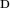), and using all the information in those data. We do this by computing the full likelihood of the models described above. Ecoevolity models biallelic characters from across the genome as having evolved along their respective gene trees according to continuous time Markov chain of state change. It assumes a two-state equivalent of either the Jukes-Cantor (JC69) or general time-reversible (GTR) of nucleotide substitution [9][25]. Furthermore, ecoevolity assumes each gene tree branched within the populations according to a coalescent model [10]. Given one of the possible divergence models (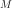) and values of its parameters (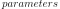; divergence times, effective population sizes, and state frequencies), ecoevolity directly computes the probability of the biallelic characters, 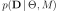. By doing so, ecoevolity effectively integrates over all possible gene trees and character substitution histories along those tries, during the likelihood calculation. This frees ecoevolity from having to estimate the gene trees, and is all thanks to the work of David Bryant and colleagues [3].
Using this likelihood function and Markov chain Monte Carlo (MCMC), Ecoevolity jointly samples the posterior across all possible models:
(1)¶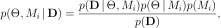
Once we have our samples from the joint posterior above, we can marginalize all the parameters to approximate the posterior probabilities of the divergence models:
(2)¶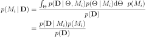
We can get Monte Carlo approximations of these probabilities by simply looking at the proportion of the posterior samples that are from each model.
Note
The term Equation (2) is absolutely critical. This is the marginal likelihood of model 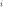, which updates our prior to give us the posterior probability for model . The marginal likelihood is the model’s likelihood “averaged” over all possible values of the parameters, and the average is weighted by the priors on those parameters. As a result, the marginal likelihood of each model can be very sensitive to the priors we choose for the parameters, even if we have a lot of informative data. Accordingly, we highly recommend you analyze your data multiple times using different prior settings (especially the prior on divergence times) to assess how sensitive your results are to the priors.
Priors on divergence models¶
To sample from the posterior in Equation (1), we have to assume a prior on all the possible ways our pairs of species diverged (divergence models). As of Version 1.0.0, Ecoevolity treats the divergence model (number of divergence events, and the assignment of the taxa to the events) as a random variable under three different distributions: The Dirichlet process, Pitman-Yor process, and uniform. Prior to Version 1.0.0, only the Dirichlet process was implemented.
Dirichlet-process prior¶
The basic idea of the Dirichlet process [4][1] is quite simple; we assign species pairs to divergence events one at a time following a very simple rule. When assigning the 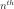 pair, we assign it to its own event (i.e., a new divergence event) with probability
(3)¶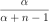
or you assign it to an existing event 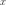 with probability
(4)¶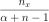
where 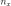 is the number of pairs already assigned to event . Let’s walk through an example using our three pairs of lizard species. First, we have to assign our first pair (“A”) to a divergence event with probability 1.0; let’s call this the “blue” divergence event. Next we assign the second pair (“B”) to either a new (“red”) divergence event with probability 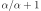 or to the same “blue” divergence event as the first pair with probability 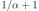. For this example, let’s say it gets assigned to the “blue” event. Lastly, we assign the third pair (“C”) to either a new (“red”) divergence event with probability or to the same “blue” divergence event as the first two pairs with probability .
The GIF below illustrates how the these simple rules determine the prior probability of all five possible models. Notice toward the end of the animation, as the concentration parameter increases we place more probability on the divergence models with more independent divergence events (less shared divergences).

An example of the Dirichlet process.¶
Notice that the Dirichlet process prior (DPP) is not motivated by any biological processes. Rather, we use it because it is flexible (we can adjust or estimate the concentration parameter), and mathematically convenient; it allows us to use Gibbs sampling [12] to sample across divergence models.
Pitman-Yor process prior¶
One of the newly implemented ways of modeling shared divergences is the Pitman-Yor process (PYP) [21]. The PYP is a generalization of the Dirichlet process. It adds an additional parameter called the “discount” parameter, which we will denote as 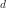. When 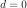 the PYP is equivalent to the DP. The discount parameter gives the PYP flexibility over the tail behavior of the process (the DP has exponential tails).
The rule governing the PYP is very similar to the DP. When assigning the pair, we assign it to its own event (i.e., a new divergence event with a unique time) with probability
(5)¶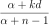
where  is the number of events that currently exist (i.e., that
already have a pair assigned to it).
Or, we assign it to an existing event with probability
is the number of events that currently exist (i.e., that
already have a pair assigned to it).
Or, we assign it to an existing event with probability
(6)¶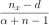
where is the number of pairs already assigned to event .
The animation below illustrates how the these rules of the PYP determine the prior probability of all five possible models of divergence. Notice toward the end of the animation, as the discount parameter increases we place more probability on the divergence models with more independent divergence events (less shared divergences). Again, when the discount parameter is zero, the PYP is equivalent to the DP.

An example of the Pitman-Yor process.¶
Click here for a larger, interactive demonstration of the PYP.
With an extra parameter, the PYP has greater flexibility than the DP. We can adjust both the concentration and discount parameters to fit our prior expectations. Also, we can put distributions on both of these parameters and integrate over uncertainty about the prior probabilities of the divergence models. The PYP preserves the mathematical conveniences of the DP. We can quickly calculate the probability of any model, and the exchangeability property still allows us to use Gibbs sampling to sample across possible divergence models.
Uniform prior¶
We have also implemented a uniform prior over divergence models, where we assume a priori that every possible divergence model (every way of grouping the divergence times of the population pairs) is equally probable. Furthermore, we added a “split weight” parameter, which we denote as 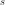, to provide some flexibility to this prior on divergence models.
We can think of the split weight () in simple terms.
For a given model with divergence events (i.e., divergence time
categories), the relative probability of each model with
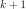 events is ,
and the relative probability of each model with
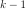 events is 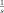.
More generally, the relative probability of each model with
events is 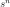,
and the relative probability of each model with
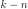 events is 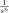.
To get a feel for this “uniform” prior, in the following tables we will look at an example for 4 pairs of populations, with 3 different values for the split weight. First, some notation that is used in the tables:
- 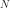
The number of population pairs we are comparing.
The number of divergence events (i.e., divergence time categories).
- 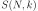
The number of models that have
categories (the Stirling number of
the second kind).- 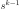
The relative probability of each model with
events (we scale this
relative probability to help make the tables readable).
The relative probability of the entire class of divergence models with
events.- 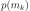
The probability of each divergence model with
events.
Split weight 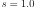:
|
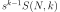 |
|||
1 |
1 |
1 |
1 |
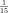 |
2 |
7 |
1 |
7 |
|
3 |
6 |
1 |
6 |
|
4 |
1 |
1 |
1 |
Split weight 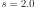:
|
||||
1 |
1 |
1 |
1 |
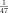 |
2 |
7 |
2 |
14 |
|
3 |
6 |
4 |
24 |
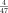 |
4 |
1 |
8 |
8 |
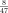 |
Split weight 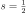:
|
||||
1 |
1 |
8 |
8 |
|
2 |
7 |
4 |
28 |
|
3 |
6 |
2 |
12 |
|
4 |
1 |
1 |
1 |
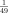 |
Inferring shared demographic changes¶
In addition to the divergence models discussed above, with ecoevolity, you can also infer shared changes in effective population size. For example, insular species of lizards might increase their population sizes when their island coalesces with another island:

Also, ecoevolity allows you to infer a mix of divergences and population expansions/contractions: